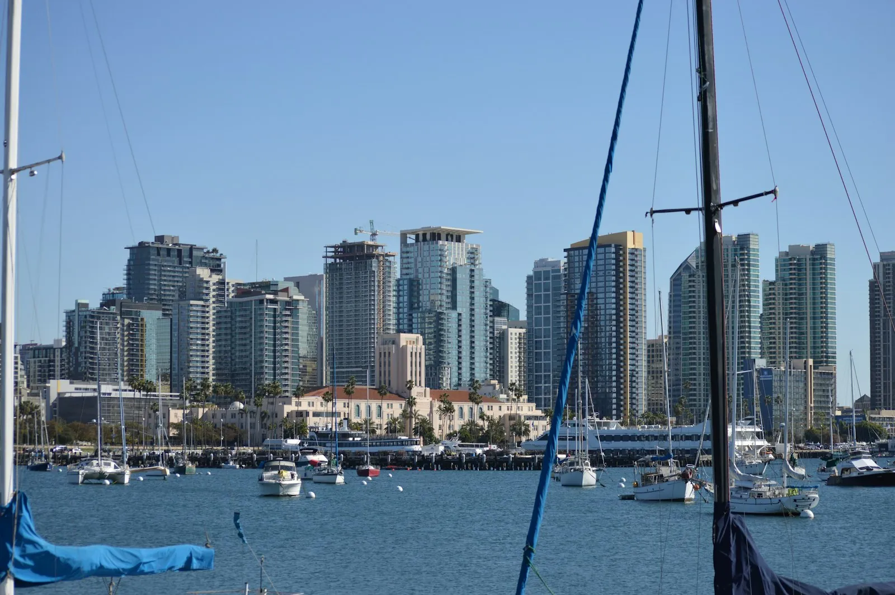

San Diego Travel Guide: La Jolla, Balboa Park, Beaches & Gaslamp
· By GoldenPath Guide Editorial Team
On a cool February morning the water at La Jolla Cove is glass-still, and a sea lion has parked itself on the rock jetty like it owns the place. That is San Diego in a sentence: Southern California’s most relaxed corner, built around surf and sunshine rather than nightlife. The weather runs on a near-permanent spring, the food scene punches above its weight, and most of what you came to see sits within a short drive of the Pacific. Here is how to spend a few days here.
La Jolla
Pronounced la-HOY-a, this cliff-top village is the city’s most photogenic district. Sea lions haul themselves onto the rocks at La Jolla Cove, the water stays clear enough to spot fish from the seawall, and the bluffs at Torrey Pines Gliderport are where paragliders drift over a horizon that seems to go on forever.
Do not leave without this:
- La Jolla Cove & Children’s Pool — sea lions and seals lounging inches from the walkway.
- Torrey Pines State Reserve — cliff-top trails above the ocean.
- Birch Aquarium — hands-on marine exhibits set over the bay.
- Whale watching — gray whales pass offshore every winter.
Balboa Park
Balboa Park spreads across 1,200 acres and holds more than a dozen museums, some genuinely lovely gardens and the San Diego Zoo. It grew out of a pair of expositions, which explains the Spanish colonial buildings and the grand archways framing every path. Budget a full day. Pick two or three museums, or hand the whole morning to the zoo.
Standouts include the Natural History Museum, the Museum of Us and the Japanese Friendship Garden. The park is walkable and a free shuttle runs the loop.
Beaches & Coastal Neighborhoods
Each beach has its own personality:
- Mission Beach & Pacific Beach — boardwalk energy, surfers and casual taquerias.
- Coronado — families and the grand Hotel del Coronado.
- La Jolla Shores — gentle water, ideal for kayaking.
- Ocean Beach — scruffy, dog-friendly and famously laid-back.
Gaslamp Quarter & Downtown
Downtown’s Gaslamp Quarter is where the city goes after dark — a strip of Victorian facades packed with rooftop bars and busy kitchens. It sits a short walk from Petco Park, where the Padres play, and from the waterfront at Seaport Village. Come for dinner and stay for the evening.
Distinctly San Diego
- Old Town San Diego State Historic Park — the city’s birthplace, heavy on Mexican-era history.
- Cabrillo National Monument — panoramic views off Point Loma.
- Little Italy — exceptional Italian food in a gentrified waterfront quarter.
- San Diego Bay cruises — the naval base and skyline from the water.
Best Time to Visit
San Diego stays mild all year, but the sweet spots are spring (March–May) and early autumn (September–October), when the days are warm and the crowds thin. Summer delivers peak visitation and those gray morning fogs locals call “June gloom.” Winter is gentle on the wallet and cool in the evenings.
Zoo, Safari Park and SeaWorld: Ticket Math
San Diego's big three price like theme parks, so do the arithmetic. The Zoo's one-day pass runs about $70 for adults; the two-day Zoo-plus-Safari-Park ticket near $120 pays off whenever both parks make the itinerary — the Safari Park sits 35 miles north in Escondido, so pair it with a North County day. SeaWorld single-day tickets run $90 to $110 at the gate, with online advance fares near $70 and multi-day options cutting per-day costs under $60. The Go City San Diego pass bundles 3 to 5 attractions near $100 to $150 and breaks even at three major stops. Balboa Park's museum multi-pass covers 4 to 5 museums for about $60 — individual admissions run $15 to $25 each. All three animal parks discount children's tickets roughly 10 percent; under-3s enter free. Skip gate-price purchases everywhere — every operator discounts online sales made a day or more ahead.
Tacos, Breweries and Neighborhood Dining
San Diego eats best at the neighborhood level. Old Town's Mexican rooms serve carne asada plates and fish tacos at $12 to $18; the weekend mariachi patios add atmosphere at no cover. Convoy Street's Asian corridor holds ramen, hot pot and K-BBQ rooms at $15 to $25 per person — dinner waits run 30 minutes on Fridays, so arrive before 6 p.m. North Park and South Park pour the craft-beer scene: tasting-room flights of four run $12 to $18, and the brewery-row patios welcome outside food-truck orders. Point Loma's seafood counters serve the morning's catch near $20; the Liberty Station food hall covers picky groups with 20-plus stalls at $12 to $18 per meal. Little Italy's Saturday farmers' market (8 a.m. to 2 p.m.) samples the week in one walk. Fine dining concentrates downtown and in Del Mar at $60 to $100 per person — reserve weekends two weeks out.
Getting Around: Trolley, Ferries and Parking
The San Diego Trolley covers the practical triangle: the Blue Line links Old Town, downtown, the border and UTC/La Jolla; the Green Line reaches Mission Valley, SDSU and Santee. Day passes cost $6 with free transfers — the math beats downtown parking ($20 to $35 a day in Gaslamp garages) for any two-stop day. The Coronado Ferry runs $8 each way from Broadway Pier with bike space; the 15-minute crossing frames the skyline. Beach parking flips by season: La Jolla Cove lots fill by 10 a.m. summer weekends (arrive before 9 or use the 30 bus), while Ocean Beach and Mission Beach lots turn over faster. Rideshares from the airport to the Gaslamp run $20 to $30; the 992 bus does it for $2.50 in 15 minutes. Skip the rental car for downtown-only weekends — the trolley plus walking covers it. Keep the car for zoo-to-beach-to-North-County days.